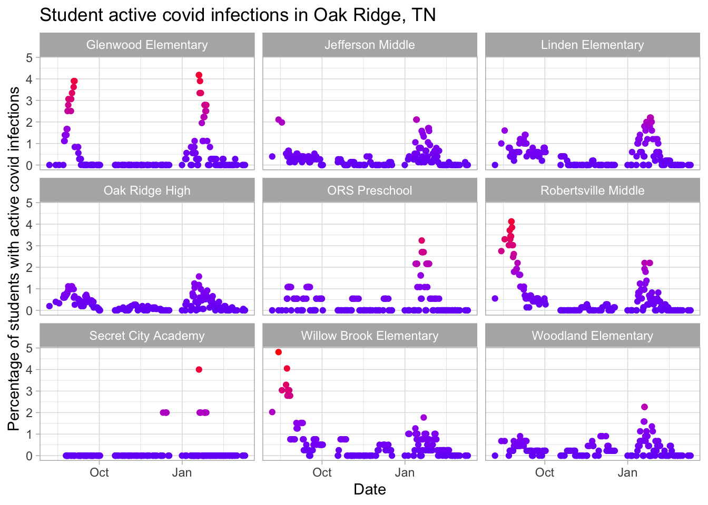
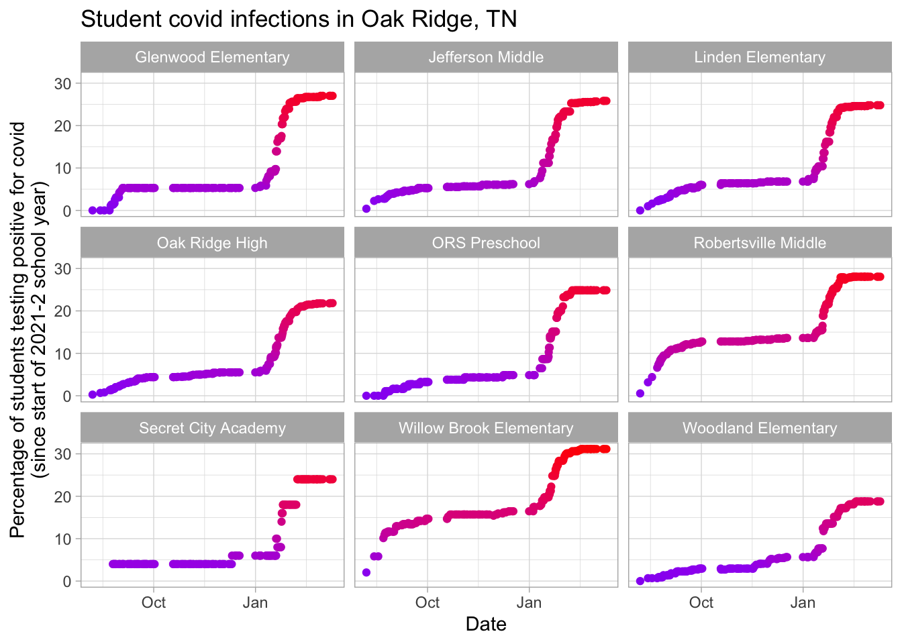

Oak Ridge Schools are releasing information at https://www.ortn.edu/covid-information/, which includes info on masking and other measures. I take a snapshot of this every 6 hours and plot it. You can also get information at https://www.oakridger.com/ and https://oakridgetoday.com/.

The plot below shows the proportion of students with active covid cases at any one time. Willow Brook Elementary had mandatory masking put in place starting Monday, Aug. 9, 2021. Jefferson and Robertsville Middle Schools had mask mandates put in place starting Monday, Aug. 16, 2021. In response to Gov. Lee’s executive order 84 allowing parents to opt out of mask mandates, on Wed., Aug. 19, 2021, Oak Ridge Schools chose to eliminate all mask mandates. However, mask mandates (though with parental opt outs) were reinstated at a school board meeting on Aug. 23, 2021.
The CDC and the American Academy of Pediatrics recommend that everyone in schools over the age of 2 wear a mask.

I also maintain vaccication.org. This has information about vaccination in various US counties; below is the page for Anderson County, home of Oak Ridge (which also is part of Roane County). Pay special note to the vaccination rate for those age 12-18.